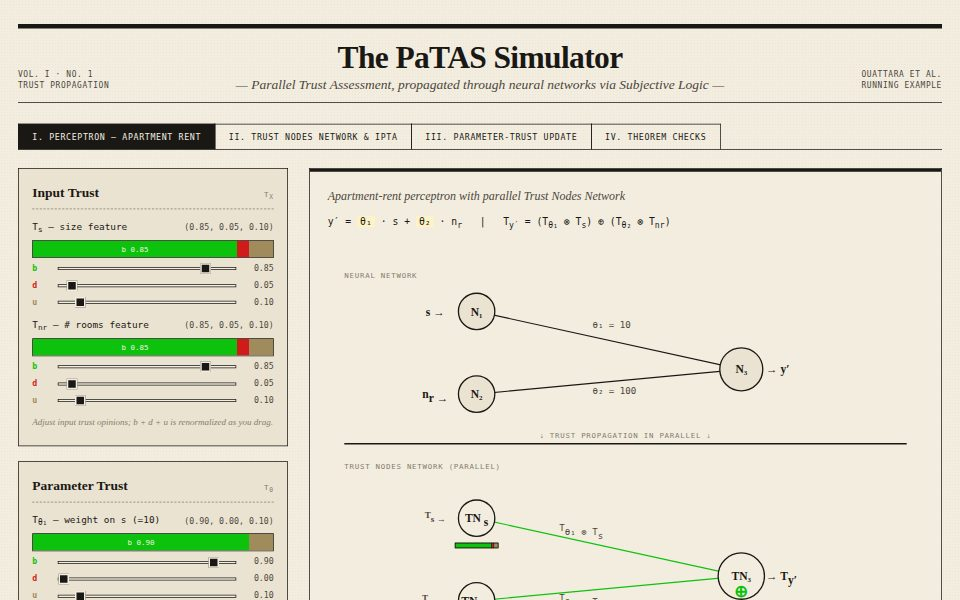
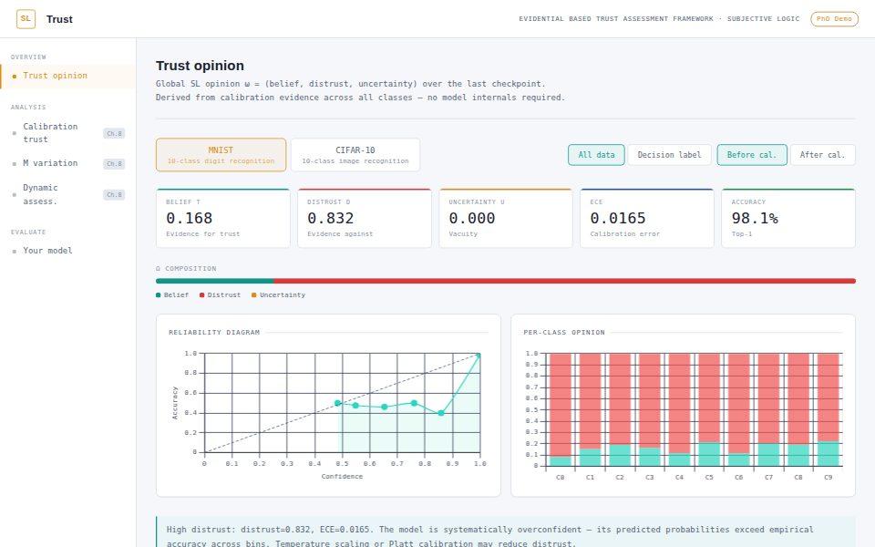
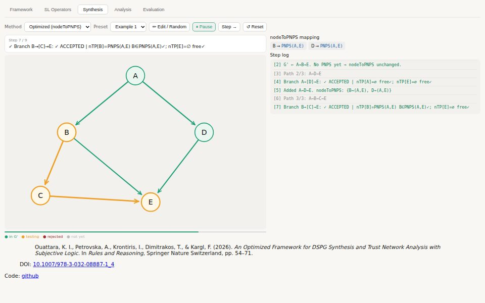
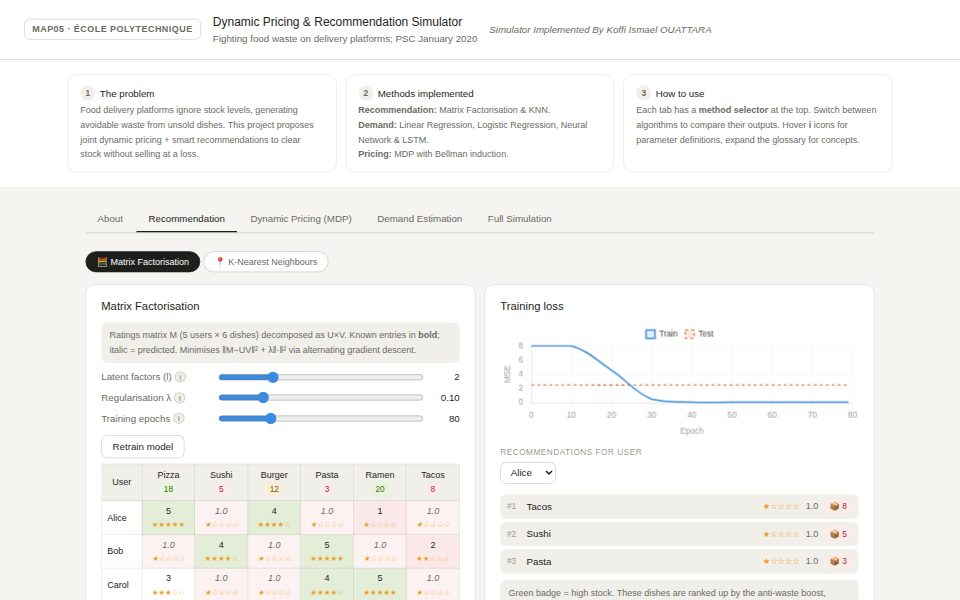

I build the evals and tooling that show where AI systems fail, and ship them.
PhD researcher in AI security at Huawei Technologies and Ulm University (thesis submitted, defence November 2026). I shipped a deployed runtime failure monitor (PaTAS), inference-time policy enforcement for agents, and a sole-authored audit of how the field reports uncertainty. Before the PhD: Mithril Security, Nokia Bell Labs and INRIA; École Polytechnique and Télécom Paris.
Looking for a research or research engineering position in AI safety and security, in industry or academia. Open to any location.
Selected results
Attack success after removing the parameters an untrusted source shaped, for 0.15 points of clean accuracy. No clean reference set, no trigger knowledge.
Detects backdoored inputs with no trigger knowledge, matches softmax on clean data, under 0.1 ms per batch. Deployed.
Learned aleatoric uncertainty compared with a measured noise floor on CIFAR-10H, with pre-registered predictions and bootstrap confidence intervals.
Audited survey of 50 recent papers: of the 38 that report a learned aleatoric estimate, 22 compare it to nothing and 5 to any real floor.
Demos
Interactive pages that run entirely in the browser.

Trust propagation through a neural network with Subjective Logic, step by step.
Open demo
Neural network calibration expressed as a Subjective Logic opinion, on MNIST and CIFAR-10 predictions.
Open demo
Directed series-parallel graph synthesis and trust inference on trust networks.
Open demo
Reinforcement learning against food waste on delivery platforms. École Polytechnique project, 2020.
Open demoPublications and patent
Preprints and papers under review
-
Position: Learned Aleatoric Uncertainty Should Never Be Reported Without a Measured Noise FloorA learned aleatoric estimate is the true noise floor plus the model's own error, of unknown magnitude and, in classification, unknown sign. Gives an exact decomposition of that gap, measures it on CIFAR-10H against 511,000 human judgements with pre-registered predictions and bootstrap confidence intervals, shows that a standard estimator choice fabricates a trend of exactly the claimed shape, and surveys 50 recent papers: 22 of 38 compare their estimate to nothing.
-
Provenance Is Enough: Removing Backdoors From the Parameters an Untrusted Source ShapedAttributes every parameter of a trained network to the training sources that shaped it, weighted by their share of its gradient, and removes the parameters an untrusted source formed. Drives a patch backdoor's attack success from 99.08% to 0.10% for 0.15 points of clean accuracy, with no retraining, no clean reference set and no knowledge of the trigger.
-
Where Uncertainty Lives: Exact Per-Layer Attribution of Aleatoric and Epistemic Variance, and the Trade-off It Reveals
-
PaTAS: A Framework for Trust Propagation in Neural Networks Using Subjective Logic
-
Subjective Heads for Frozen Foundation Models
Published
-
Quantifying Calibration Error in Neural Networks Through Evidence-Based Theory
-
Assessing Trustworthiness of AI Training Dataset Using Subjective Logic: A Use Case on Bias
-
Quantifying Dataset Trustworthiness from Labeling Bias Using Subjective Logic
-
An Optimized Framework for DSPG Synthesis and Trust Network Analysis with Subjective Logic
-
Actions Speak Louder Than Words: Evidence-Based Trust Level Evaluation in Multi-Agent Systems
-
On Subjective Logic Trust Discount for Referral Paths
-
Detecting Fake Base Stations Using Knowledge Graphs and ML-Based Techniques
Patent
-
Distributed Machine Learning Solution for Rogue Base Station Detection
Experience
-
2023–2026PhD Researcher, AI Failure Modes, Evaluation and Agent SafetyHuawei Technologies and Ulm University, Paris / Munich
- Built and deployed PaTAS, a runtime monitor for anomalous model behaviour, adversarial inputs and drift: detects backdoored inputs at AUROC 1.00 with no trigger knowledge, matches softmax on clean data, under 0.1 ms per batch.
- Extended the same parameter-level attribution into a backdoor defence that needs no retraining, no clean reference set and no trigger knowledge: attack success 99.08% to 0.10% for 0.15 points of clean accuracy (submitted to SaTML).
- Sole-authored a benchmark-grade audit of uncertainty reporting: exact theory of when learned estimates can be trusted, measured against 511,000 human judgements (CIFAR-10H) with pre-registered predictions and bootstrap confidence intervals.
- Showed in that audit that a standard estimator choice fabricates a trend of exactly the claimed shape, and surveyed 50 recent papers with an audited protocol: 22 of 38 compare their estimate to nothing.
- Developed inference-time policy enforcement for AI agents: logical rules combined with neural learning to detect and block unsafe behaviour; co-authored an evidence-based trust evaluation for deceptive agents in multi-agent systems.
- Built LLM failure-mode evaluation pipelines: calibration of transformer models under distribution shift and adversarial conditions, prompt-injection evaluation.
- Published a methodology for auditing training-dataset bias, the data-quality side of any eval that must survive changing product data.
- Coordinated evaluation research across 3 EU HORIZON projects (CONNECT, CASTOR, DUCA) with 6+ institutions; open-source contribution to go-taf.
-
2022–2023Machine Learning / Security EngineerMithril Security, Paris
- Attacked deployed ML services (model extraction, membership inference) and turned the findings into production defences validated by attack/defence evaluation.
- Built privacy-preserving inference pipelines on Intel SGX enclaves.
-
2022Research Intern, Anomaly Detection at ScaleNokia Bell Labs, Nozay
- Graph neural networks for anomaly detection on live 5G telemetry; co-invented a distributed detection system granted as US patent US20240121678A1.
-
2021Research Intern, Formal Verification of Security ArchitecturesINRIA, Rennes
- Meta-model of cryptographic architectures for formal compliance verification.
-
2025–presentCo-founder and Developer, PlayInvest-HDWeb, Android and iOS
- Built and launched a live investing-education platform: virtual portfolio over global assets (BRVM, Europe, US, crypto), quizzes that unlock funds, leagues, a past-performance simulator and a learning module. Web app plus native apps on Google Play and the App Store; 10k+ active players.
Education
-
2023–2026PhD in AI SecurityUlm University, industrial PhD with Huawei TechnologiesThesis submitted, defence November 2026. Trust assessment and propagation in neural networks: uncertainty quantification, calibration, robustness, multi-agent systems.
-
2021–2023Engineering Degree and MSc, Cybersecurity and Machine LearningTélécom Paris, Institut Polytechnique de Paris
-
2018–2022Cycle Ingénieur PolytechnicienÉcole PolytechniqueThe Polytechnique cycle includes final specialisation years at a partner school, completed at Télécom Paris; the two programmes overlap by design.
Academic service: peer reviewer, TRUST-AI workshop at ECAI 2025. Security practice: 45 Root-Me challenges, mainly cryptanalysis and reverse engineering.
Skills
- Evals and benchmarks
- Benchmark design, pre-registered protocols, reproducing and stress-testing published results, human-judgement floors, calibration and uncertainty metrics, bootstrap confidence intervals, minimum detectable effects.
- Guardrails and agents
- Inference-time policy enforcement, neuro-symbolic rules, unsafe-behaviour detection, multi-agent trust evaluation, agentic workflows.
- Adversarial ML
- Prompt-injection evaluation, backdoor and poisoning defence, adversarial inputs, model extraction, membership inference, threat modelling.
- Monitoring
- Runtime failure monitoring, drift and out-of-distribution detection, latency-aware evaluation, dataset-bias auditing.
- Engineering
- Python, PyTorch, HuggingFace Transformers, NumPy, GPU pipelines, Git, Docker, full-stack web and mobile, reproducible research code.
- Languages
- English (fluent), French (native), Mandarin Chinese (A1), Spanish (A1).
Contact
- Email ouattaraismael1999@gmail.com
- GitHub github.com/Ouatt-Isma
- LinkedIn koffi-ismael-ouattara
Other projects: AMON.AI, retrieval-augmented question answering over construction project documentation; faos.fr, platform for a business accelerator agency.